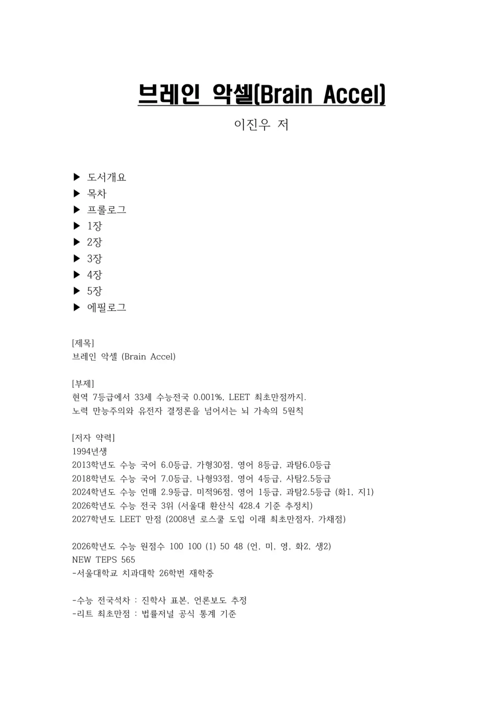

출판사에서 단독으로 브레인악셀 초고 공개했는데
뉴텝스 600점만점에 565점이라고 적혀있었음 (아직 본인이 인증은 안해서 사실여부는 모르는 상태)
텝스 565는 강사들도 힘들다고함
출처 : https://scenefocus.kr/news/651/

출판사에서 단독으로 브레인악셀 초고 공개했는데
뉴텝스 600점만점에 565점이라고 적혀있었음 (아직 본인이 인증은 안해서 사실여부는 모르는 상태)
텝스 565는 강사들도 힘들다고함
출처 : https://scenefocus.kr/news/651/
영어를 모르니까가 진짜 파멸적이네 ㅋㅋ
영어 모르고 의사 어캐하냐 말이되는 소리임?
책보니까 증상 죄다 영어로 적혀있던데
이 떡밥을 이제 봤네
내가 2-3달 정도 빡공부해서 400 정도 나왔었음
청해를 어떻게 푼건지 모르겠는데, 사람들이 생각하는 부정행위가 맞다는 전제면 그냥 영어회화시켜보면 됨
내 주변에 뉴텝스 500 넘는건 검머외급들 밖에 없다
애초에 뉴텝스는 오답지가 낚시성이 강하고(과거형을 현재형으로 표현해서 오답 유도한다던지), 킬러 문항은 원어민도 이게 시발 뭐임? 할 수준의 전문 용어에 동의어까지 동원해서 낚아댐
솔직히 한국인이 뉴텝스 점수 시간 갈아서 올려봤자 상한선은 450 정도가 한계인 시험이라고 봄
그런데 회화는 한마디도 못한다? 말도 안됨
서울대 다니면서 그런 인간 단 한명도 못봤다
웬만한 점수면 어학점수와 회화는 별개다. 하는데, 저 정도는... 못하기 힘들지 ㅋㅋㅋㅋㅋㅋㅋㅋ
뉴텝스 청해가 어려운시험이라 아무리 잘받아도 나는 380대던데ㅜ
진짜...이런 인재가 치대를 가는 현실이 참...공대를 갔으면 세상을 바꾸실텐데...ㅠㅠ
안 걸리면 치대
걸리면 부정행위 아입니까